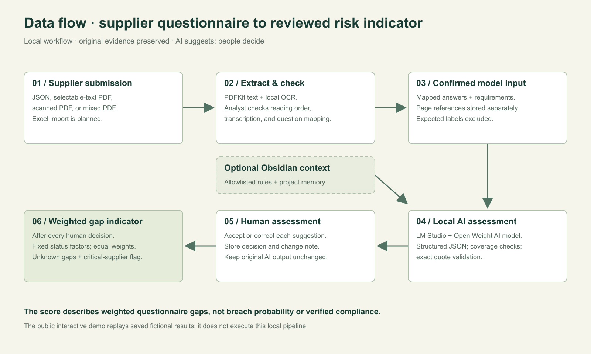
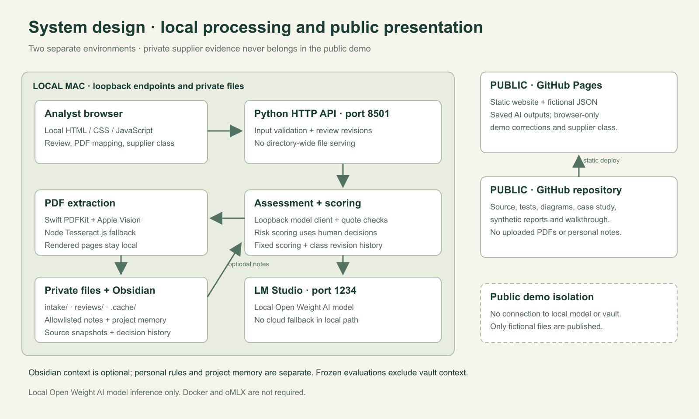

PRE-ENGAGEMENT SUPPLIER INFORMATION SECURITY RISK ASSESSMENT
A questionnaire answer is a claim. Make it reviewable.
Assess a potential supplier’s information security risks before sharing data, granting access or relying on its services. Built for a buyer’s security-review workflow in the U.S., Europe or Korea: a traceable evidence pipeline, an Open Weight AI model and accountable human decisions.
Confidential supplier evidence stays on your computer in the local workflow. On-device OCR and an Open Weight AI model through LM Studio; no upload to cloud AI.
Built by lkykor77 · Deployment Strategist portfolio · Fictional supplier data
A FAILURE WORTH SHOWINGSAVED MODEL RESULT
“We have not specified who handles security questions.”
Model suggestionMissing
Draft rubric labelUnknown
Unspecified ownership does not prove the contact is absent. An analyst should correct this suggestion.
Real saved output · Open Weight AI model · Supplier H / Question 1
24 / 25Local labels matched one frozen synthetic run
47 checksApp tests passed on the development Mac
Text + scansLocal PDF extraction with checked page references
Separate decisionsImmutable model output and reviewer audit history
START WITH THE CUSTOMER DECISION
Why this project matters.
Before a company works with a potential supplier, its security team needs to understand the relationship’s information security risks. Can the supplier protect the information and systems it will touch? What must be resolved before proceeding?
THE WORKFLOW PROBLEM
Assess the exposure.
A supplier may handle customer data, administer production systems or support an important service. Reviewers must assess its controls from inconsistent questionnaires, PDFs and scans, identify gaps and preserve the evidence.
THE PRODUCT RESPONSE
A usable review record.
A local pipeline turns supported documents into checked answers, structured suggestions and human decisions. Buyer requirements are linked to illustrative ISO 27001 and NIST CSF topics. The reviewer identifies evidence requests, remediation and escalation needs.
THE VALUE TO VALIDATE
Explain the security decision.
Test total review time, corrections, unsupported positive assessments and follow-up effort with users. The prototype has technical evidence; customer outcomes remain to be measured.
The risk owner decides whether to proceed, require remediation, accept an exception or decline. Assessment depth depends on data, access and service dependency; applicable obligations vary by relationship. This prototype does not determine jurisdiction-specific compliance or overall residual risk.
CONFIDENTIAL DOCUMENTS → A LOCAL DEPLOYMENT CHOICE
Keep the evidence local. Make the AI inspectable.
Supplier policies, infrastructure details and incident procedures can be confidential. The local assessment workflow processes that evidence on the user’s computer instead of uploading it to a cloud AI provider.
CONFIDENTIALITY
On-device processing.
PDF extraction, OCR, model prompts, selected Obsidian context and saved review records stay within the local workflow. The AI harness restricts requests to loopback endpoints, bypasses proxies and refuses redirects.
CONTROL
Your inference environment.
Choose a supported Open Weight AI model and settings in LM Studio. Keep prompt/data hashes, model outputs and reviewer corrections for investigation. Revalidate the workflow when changing the model or runtime.
INDEPENDENCE
No cloud inference dependency.
After model/runtime/OCR setup, local assessment needs no cloud inference API or provider quota and has no cloud fallback. Avoid per-request cloud inference charges while using your own hardware and its compute costs.
CUSTOM PYTHON AI HARNESS
The software around the model.
The harness prepares prompts and supplier answers, loads selected Obsidian rules/memory, calls LM Studio locally, and validates completed JSON, requirement coverage and verbatim evidence. The review application then preserves human decisions separately and gates scoring until review is complete. LM Studio hosts the model; the harness manages how the application uses it.
Prepare evidence & context → Local model request → Validate structured output → Human review & traceable records
The implemented local app does not send supplier evidence to cloud AI. This is an application-level boundary, not a guarantee about the whole computer. Downloads and updates use network access; separately configured vault/cloud sync, backups, extensions, remote access or exports can transmit files. Keep confidential evidence in approved local storage and review those settings.
The separate Gemini comparison script makes cloud requests and should use fictional data. This public demo is a saved-results presentation with no document uploads or connection to your model or vault. Local processing does not itself certify compliance or make a computer secure.
Realistic fictional business contexts attached to the existing saved answers. These are illustrative scenarios, not customer engagements or new model runs. Region is business context, not a risk rating.
Proposed evidence packs illustrate discovery and follow-up; the public demo shows saved answers rather than uploaded documents. Additional privacy, contractual and regulatory checks require a broader assessment.
01 / INTERACTIVE REVIEW DEMO
See it. Challenge it. Make the call.
This public demo uses saved Open Weight AI model results. It runs in your browser with fictional answers. It makes no inference requests and accepts no document uploads.
ONE SUPPLIER · ONE QUESTIONNAIRE
Fictional Supplier F
All five answers below belong to this supplier.
SAVED RESULTSChoose one supplier to see all five answers, their buyer-requirement results, and related framework criteria. Demo decisions stay in this browser.
0 / 5 reviewed
These buyer requirements are fictional. Statuses assess the buyer rubric. ISO/NIST references show related topics, not verified framework conformity. Draft labels have not been independently validated.
Critical suppliers support important services, sensitive data, or privileged access. They receive an enhanced-review flag for any partial, missing or unknown answer. No custom weights are needed.
Loading the saved examples…
Demo decision history 0
02 / THE FULL LOCAL APP
From a scanned PDF to a reviewable result.
The local app extracts native text and OCR on your Mac. You verify and map each answer before the custom AI harness sends it to LM Studio on the same computer. No cloud AI receives the document. Selected Obsidian notes are optional; personal rules stay out of GitHub.
A captioned walkthrough assembled from actual local-app captures. Fictional scan, isolated QA records; no fabricated user approvals.
03 / DATA PIPELINE & APPLICATION DESIGN
From raw evidence to an operational workflow.
Hands-on Python and JavaScript implementation connects extraction, checked mappings, structured inference, evidence validation, human corrections and risk scoring. Stable IDs and source snapshots keep the decision record inspectable.
INPUTPDF or JSONNative text + local OCR
→
ANALYSTChecked answersRequirement + page mapping
→
LOCAL INFERENCEOpen Weight AI modelLM Studio · custom Python AI harness
→
DECISIONHuman reviewCorrection + audit history

Data flow · document-to-decision provenance, with optional Obsidian rules and memory.

System design · each component has a bounded responsibility; private evidence stays local.
01
Shape the problem
Identify the pre-engagement supplier security decision, the reviewer’s evidence needs and the handoffs to procurement and risk owners. Define a bounded workflow before expanding the stack.
02
Prepare usable data
Extract text and OCR, confirm answer mappings, preserve page references and keep supplier, question and assessment identities connected.
03
Build the application
The custom Python AI harness and JavaScript review controls turn model suggestions into inspectable evidence, separate human decisions and a transparent gap summary.
04
Analyze and improve
Reproduce the empty-final-output failure, inspect request/response fields, verify the fix, and test evidence validation. Show the remaining model error instead of hiding it.
CODE THAT SERVES THE WORKFLOW
Reject fabricated evidence.
This excerpt from the Python validator prevents a suggestion from citing words absent from the corresponding supplier answer. It checks quote existence; the reviewer still checks meaning.
if quote and (not quote.strip() or quote not in answer):
raise ValueError(
f"{rid}: evidence quote is not verbatim in the answer."
)
EVIDENCE, WITH LIMITS
One frozen set. Twenty-five assessments.
Same original prompt and synthetic source data; no Obsidian context in this comparison. Different runtimes and settings. These runs do not establish which model is generally better.
Saved evaluation runs · October 13, 2026
Assessor
Labels matched
Median latency
Open Weight AI model
24 / 25
26.086 s
Gemini
23 / 25
1.439 s
Keyword baseline
8 / 25
Not measured
All 25 local quotes passed verbatim checks. Quote existence does not prove that the evidence supports the label. Small synthetic set; draft expected labels need analyst validation.
Validate the rubric with an independent analyst, observe the current process and measure total manual versus assisted effort. Use the findings to prioritize broader formats, access controls or integrations. Customer discovery and pilot outcomes remain next steps.
A proposed plan for a hypothetical customer: define the operational question, work through the evidence with analysts, train reviewers, measure value, and decide the next scope together.
Discover the workflow
Meet security, procurement, risk and engineering stakeholders. Observe the handoffs, identify relevant inputs, and establish baseline measures.
Configure and demonstrate
Agree the rubric and criticality boundaries. Show extraction, checked mappings, a model correction and the risk summary using fictional examples.
Train and evaluate
Guide reviewers through a complete questionnaire. Measure review time, correction effort, evidence errors and independent use.
Iterate on the highest-value gap
Use actual feedback to choose the next improvement and name its owner. Agree acceptance criteria before expanding deployment scope.
Practical tooling, with clear responsibilities.
LM Studio serves the local Open Weight AI model. Obsidian provides explicitly selected AI rules, knowledge and persistent project memory. The custom Python AI harness controls prompts, local model requests and output validation. Python and JavaScript implement the pipeline and review application; Swift and Node support PDF extraction/OCR; GitHub Pages delivers the public demo. Docker and oMLX are optional, untested extensions.
The plan demonstrates deployment reasoning. It is not a completed customer engagement or a measured productivity result.
한국어 프로젝트 소개
공급업체 보안 설문 검토를 돕는 Deployment Strategy 포트폴리오
미국·유럽·한국의 기업이 잠재 공급업체와 거래하기 전에 정보 공유, 시스템 접근 및 서비스 의존에 따른 정보보안 위험을 평가하도록 돕습니다. 이 업무를 데이터 파이프라인과 검토 애플리케이션으로 연결합니다. PDF의 텍스트와 스캔 내용을 로컬에서 추출하고, 검토자가 답변과 출처 페이지를 확인한 뒤 AI 평가를 실행합니다. AI의 제안과 사람의 최종 판단을 따로 저장하여 수정 이력을 남깁니다.
기밀 공급업체 문서를 클라우드 AI에 업로드하지 않도록 로컬 Open Weight AI model을 선택했습니다. Python AI harness가 프롬프트, 선택한 Obsidian 문맥, 로컬 요청 및 결과 검증을 관리합니다. 로컬 앱의 처리 경로에서 문서와 평가 기록은 사용자 컴퓨터에 남습니다. 별도로 설정한 동기화·백업·외부 내보내기는 이 범위에 포함되지 않습니다.
이 공개 데모는 가상 공급업체의 저장된 결과를 사용합니다. 실제 AI 실행은 LM Studio에서 Open Weight AI model을 사용하는 로컬 앱에서 이루어집니다. 25개 합성 평가 중 24개가 초안 정답과 일치했으나, 실제 정확도나 규정 준수를 보장하는 결과는 아닙니다.